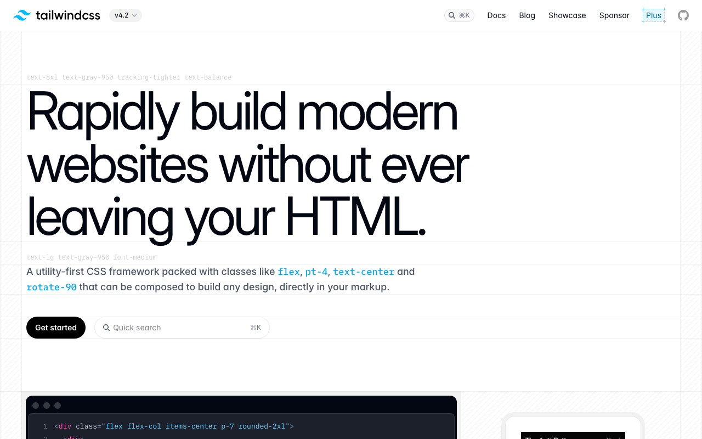

Iris + Teal glow orb · utility-class-as-hero
Tailwind CSS · https://tailwindcss.com · Fetched 2026-04-20

Tailwind CSS의 공식 사이트는 본인의 철학 그 자체를 시각화한 Utility Brutalism — 페이지가 곧 '튜토리얼이자 라이브 데모'다. dark base #030712(slate-950) 위에 iris/purple #625FFF primary + teal #00B7D7 secondary 조합으로 시그니처 그라데이션을 만들고, 실제 class="flex items-center gap-x-4" 유틸리티 문자열을 hero copy로 쓰는 과감한 개발자 직접 화법.
컬러 시스템은 Tailwind v4.x 공식 팔레트 전체를 사용하지만, 마케팅 axis는 좁다: #625FFF iris (CTA primary) + #00B7D7 teal (CTA secondary) + #3080FF blue (link) + #00A5EF cyan-bright (hero orb) + slate neutrals. frequency candidates에 semi-transparent overlays(#FFFFFF1A, #0307120D)가 대량 등장하는 이유는 glass-morphism + dark/light/system 3-mode 때문이다.
타이포는 Inter(body) + IBM Plex Mono(utility class expose용 code) 조합. weight 100/400/500/600/bold 중심 — display에 600을 즐겨 쓴다 (700 heavy가 아니라 600 mid-heavy).
레이아웃은 Tailwind v4 CSS-first 접근의 실례. group-hover, data-[state=...], :where(.dark, .dark *) pattern이 source에 그대로 드러난다. dark/light/system 3-mode가 .dark + .system class로 스위칭된다.
01. 한눈에 보기
5분 안에 Tailwind CSS 공식 사이트처럼 만들기.
/* 1. 토큰 */
:root {
--iris: #625FFF;
--teal: #00B7D7;
--blue: #3080FF;
--bg-base: #030712;
--fg: #F8FAFC;
}/* 2. Inter + Plex Mono */
body {
font-family: "Inter", system-ui, sans-serif;
font-weight: 400;
}
code, pre {
font-family: "IBM Plex Mono", monospace;
}/* 3. Iris gradient CTA */
.btn-iris {
background: linear-gradient(180deg, #625FFF, #5149E8);
color: #FFFFFF;
padding: 12px 24px;
border-radius: 8px;
font-weight: 600;
box-shadow:
0 8px 32px rgba(98,95,255,.4),
inset 0 1px 0 rgba(255,255,255,.2);
}class="flex items-center gap-x-4..." 같은 live snippet이 있어야 한다.02. 출처
| Source URL | https://tailwindcss.com |
|---|---|
| Fetched | 2026-04-20 |
| Framework | Next.js + Tailwind CSS v4 |
| Hosting | Vercel |
| Search | Algolia DocSearch integration |
| Theme | dark / light / system — 3-way |
03. 테크 스택
- Framework: Next.js (Vercel)
- CSS: Tailwind v4 (self-host)
- Typography: Inter + IBM Plex Mono (CSS vars
--font-inter,--font-plex-mono) - Theme mode:
.dark/.light/.system3-way - Search: Algolia DocSearch
- Container queries:
@containernative - Variants:
data-*,:where(.dark,.dark *),group-hover/navitem
04. 타이포그래피
Inter body + IBM Plex Mono. weight 100/400/500/600/bold. display에 600 mid-heavy.
Font Stack
- Body/UI:
Inter, Inter Fallback, system-ui, sans-serif (via--font-inter) - Mono:
IBM Plex Mono(via--font-plex-mono), Ubuntu Mono - Alt sans:
Source Sans Pro - Weights: 100 / 400 / 500 / 600 / bold(700)
Type Scale
05. 컬러
Iris + Teal 시그니처 + slate-950 dark base + glass overlays.
Dominant Usage
06. 스페이싱
Tailwind 4px 기본 scale.
07. 라디우스
07S. 섀도우
Tailwind의 시그니처는 iris glow. 일반 dark shadow 대신 color-tinted glow로 elevation 표현.
08. 모션
| Pattern | Value | Use |
|---|---|---|
| hover transition | .15s ease | default |
| theme switch | .3s ease-in-out | dark/light swap |
| group-hover | instant | utility class variant |
| nav underline | .2s ease-out | link indicator |
09. 레이아웃 패턴
Hero · utility_class_hero
- bg: slate-950 + radial purple glow orb
- headline: 60-72px weight 600
- Live utility class demo in Plex Mono
- CTAs: iris gradient + teal ghost
Section Rhythm
- padding 96-128px
- max-width 1280px
- dark/light 각기 다른 accent ramp
Card
- bg: glass
rgba(255,255,255,.03) - border:
rgba(255,255,255,.08) - backdrop-blur 12px
- radius 16px
Navigation
- height 64px
- transparent → backdrop-blur on scroll
group/navitemhover → childbg-black/75
09-R. 반응형
| Name | Value | Description |
|---|---|---|
sm | 640px | mobile |
md | 768px | tablet |
lg | 1024px | desktop |
xl | 1280px | wide |
2xl | 1536px | ultra wide |
10. 컴포넌트
Iris Gradient CTA (Primary · 시그니처)
.btn-iris {
background: linear-gradient(180deg, #625FFF 0%, #5149E8 100%);
color: #FFFFFF;
padding: 12px 24px;
border-radius: 8px;
font-weight: 600;
box-shadow:
0 8px 32px rgba(98,95,255,.4),
inset 0 1px 0 rgba(255,255,255,.2);
}Teal Ghost CTA (Secondary)
.btn-teal-ghost {
background: rgba(0,183,215,.1);
color: #00B7D7;
border: 1px solid rgba(0,183,215,.3);
padding: 12px 24px;
border-radius: 8px;
font-weight: 600;
}Glass Card
.card-glass {
background: rgba(255,255,255,.03);
border: 1px solid rgba(255,255,255,.08);
border-radius: 16px;
backdrop-filter: blur(12px);
padding: 24px;
}Utility String Display
hero에 실제 class 문자열을 보여주는 mono-fonted chip.
.utility-string {
font-family: "IBM Plex Mono", monospace;
font-size: 14px;
background: rgba(255,255,255,.05);
padding: 8px 12px;
border-radius: 6px;
border: 1px solid rgba(255,255,255,.1);
}11. Agent Prompt Guide
| Role | Token | Hex |
|---|---|---|
| Primary | --iris | #625FFF |
| Secondary | --teal | #00B7D7 |
| Link | --blue | #3080FF |
| Bg base | --bg-base | #030712 |
| Text | --fg | #F8FAFC |
Example Prompts
🎯 Hero
Tailwind CSS hero: bg #030712 + radial purple glow orb from #625FFF fading to transparent. Headline 60px weight 600 #F8FAFC. Below: syntax-highlighted `class="flex items-center gap-x-4..."` utility string in IBM Plex Mono. Dual CTA: iris gradient primary + teal ghost.
🔘 Iris CTA
Iris gradient CTA: linear-gradient(180deg, #625FFF, #5149E8), color white, padding 12px 24px, radius 8px, font-weight 600, box-shadow 0 8px 32px rgba(98,95,255,.4) + inset 0 1px 0 rgba(255,255,255,.2).
🎴 Glass Card
Glass card: bg rgba(255,255,255,.03), border 1px solid rgba(255,255,255,.08), radius 16px, backdrop-blur 12px, padding 24px.
⚙️ Utility String
Utility string chip: IBM Plex Mono 14px, bg rgba(255,255,255,.05), padding 8px 12px, radius 6px, border 1px solid rgba(255,255,255,.1), syntax-highlighted.
12. DO / DON'T
✓ DO
- ✅ iris
#625FFF+ teal#00B7D7primary pair로 - ✅ Hero에 실제 utility class string 노출
- ✅ dark/light/system 3-mode 토글
- ✅ IBM Plex Mono으로 utility string 강조
- ✅ glass overlays (rgba white .03~.1) 사용
✗ DON'T
- 전통적 gradient (blue→pink)로 대체하지 말 것
- body font를 Roboto/SFPro로 바꾸지 말 것 — Inter 필수
- hero에 utility class string 없이 marketing copy만 쓰지 말 것
- radius 9999 pill CTA 쓰지 말 것 — Tailwind은 radius 8 default
- weight 700 heavy 쓰지 말 것 — 600 mid-heavy가 Tailwind 느낌